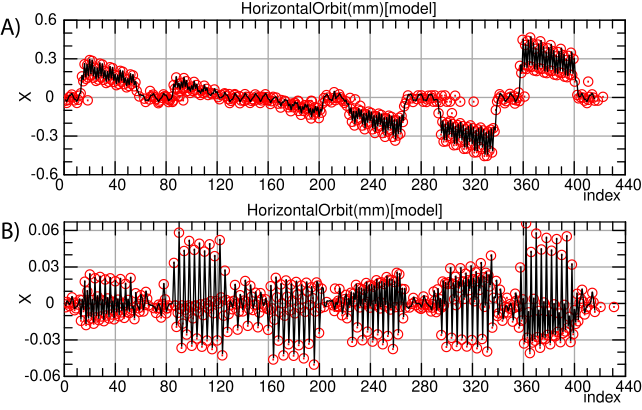

14. Orbit Correction¶
While operating accelerators, the orbit of the beam is measured with beam position monitors (BPMs). The accelerator is designed with ideal BPM readings in mind, which are often 0. After extended operational experience, operators learn good readings for all BPMs, which are referred to as golden orbits. It then becomes important to change the trajectory of the beam to obtain the desired BPM readings, with corrector magnets.
Example: Adding Corrector Coils and BPMs¶

Fig. 20 FODO cell with corrector coils.¶
Start with the ring with sextupoles of chapter 12:
from lattices.ch12_sextupoles import *
Corrector coils are placed in the
d1drifts, 6.4 cm away from the quadrupoles: downstream of the quadrupoles in the forward cells and upstream in the reverse cells. Horizontal correctors are put next to focusing quadrupoles, where the horizontal beta function is large, and vertical correctors next to defocusing quadrupoles. Define the drifts that fit the 0.2 m long correctors, and a marker for the BPMs:
with sb.elements():
d1c1 = sb.Drift(L=0.064)
d1c2 = sb.Drift(L=0.609 - 0.064 - 0.2)
bpm = sb.Marker()
Each corrector must be an element of its own, so that its kick can be set by itself. So instead of defining one corrector and placing it many times, a new corrector is made for each
d1. Becaused1is used throughout the ring, adding the correctors by editing the lines would be tedious. A beamline is built from a Julia vector of elements, so a loop over the elements of the ring can do it instead: it replaces eachd1with the two drifts and a new corrector, depending on the quadrupole next to it. The loop also puts a BPM after every bendbandbh, and after every straight section driftdb:
line = sextant1 + sextant3 + sextant5 + sextant7 + sextant9 + sextant11
n = len(line)
elements = []
hkickers = []
vkickers = []
for i in range(n):
ele = line[i]
if ele is d1:
# The quadrupole next to d1: before it in forward cells, after it in reverse cells (the
# next element of the ring after the last one is the first one)
forward = line[i-1].kind == "Quadrupole"
j = i - 1 if forward else (i + 1) % n
while line[j].kind != "Quadrupole":
j = (j + 1) % n
if line[j].Kn1 > 0:
kicker = sb.HKicker(name=f"ch_{len(hkickers) + 1}", L=0.2)
hkickers.append(kicker)
else:
kicker = sb.VKicker(name=f"cv_{len(vkickers) + 1}", L=0.2)
vkickers.append(kicker)
elements += [d1c1, kicker, d1c2] if forward else [d1c2, kicker, d1c1]
else:
elements.append(ele)
if ele is b or ele is bh or ele is db:
elements.append(bpm)
ring = sb.Beamline(elements, species_ref=electron, pc_ref=pc_ref, context=ring.context)
len(hkickers), len(vkickers), len(ring[[bpm]])
(208, 208, 416)
The new ring keeps the context of the previous one, which holds the variables of the sextupoles and the phase trombones.
A phase trombone is a matrix applied around the closed orbit at its place, built from the closed orbit and the lattice functions at the time
sb.phase_tromboneis called. The radiation and the correctors change the closed orbit, so the phase trombones are taken out now, and put back at the very end, after the orbit correction:
for tr in (tr_f, tr_r, tr_m):
ring[tr].MapParams = None
Example: Radiation-Induced Sawtooth Orbit Correction¶


Fig. 21 A) The sawtooth orbit due to synchrotron radiation (in Bmad). B) The orbit after correction using kickers and BPMs.¶
A sawtooth orbit is caused by the energy loss to synchrotron radiation around the ring. The energy of the particles changes along the ring (it decreases in the bends and is restored in the RF cavities), which makes the horizontal closed orbit a sawtooth through the dispersion. Turn on radiation damping in all elements:
for ele in ring.line:
ele.rad_damping = True
tw = sb.twiss(ring, cols=["x", "pz"])
from matplotlib.figure import Figure
fig = Figure(figsize=(8, 4), layout="constrained")
ax, ax2 = fig.subplots(2, 1)
ax.plot(tw.s, 1e3*tw.x)
ax.set_ylabel("x [mm]")
ax2.plot(tw.s, tw.pz)
ax2.set(xlabel="s [m]", ylabel="pz")
fig
<Figure size 800x400 with 2 Axes>
Correct the orbit with the horizontal correctors: make the orbit at the BPMs as small as possible (in the least-squares sense), with
minimize(see Orbit Correction). There are more BPM readings than correctors, so the orbit cannot be zero at all of them. Each corrector is a knob, and its strength is its normal dipole fieldKn0L(a kick of-Kn0L).
tw_orbit = sb.TwissExpr(ring)
res = sb.match(vary=[sb.Knob(kicker, "Kn0L") for kicker in hkickers], minimize=tw_orbit.x[[bpm]])
res.converged, res.iterations
(True, 3)
tw2 = sb.twiss(ring, cols=["x"])
ax.plot(tw2.s, 1e3*tw2.x)
fig
<Figure size 800x400 with 2 Axes>
The correctors kill the orbit at the BPMs, but between them, in the bends, the sawtooth remains, because the energy changes along each bend.
Example: Orbit Correction with Quadrupole Misalignments¶
Every placement of a quadrupole such as
qfis the same element, with the same parameters. To misalign each quadrupole by itself, first make a copy of the ring in which every element is an element of its own.copy.deepcopycopies an element of a beamline into a new, independent element, with its parameters (including deferred expressions). The copy keeps the context of the ring:
import copy
ring_err = sb.Beamline([copy.deepcopy(ele) for ele in ring.line], species_ref=electron,
pc_ref=pc_ref, context=ring.context)
Its elements are new, so they are found by their names, e.g. ring_err["bpm"] for all BPMs.
Add random horizontal offsets to all quadrupoles, from a Gaussian distribution with \(\sigma = 10\) µm, cut at \(3\sigma\):
rng = np.random.default_rng(1)
for q in ring_err["Quadrupole::*"]:
dx = 1e-5*rng.standard_normal()
while abs(dx) > 3e-5:
dx = 1e-5*rng.standard_normal()
q.x_offset = dx
tw_err = sb.TwissExpr(ring_err)
np.max(np.abs(sb.value(tw_err.x["bpm"]))) # The largest BPM reading [m]
np.float64(0.0020972019230009998)
Correct the orbit with the same process:
res = sb.match(vary=[sb.Knob(kicker, "Kn0L") for kicker in ring_err["HKicker::*"]],
minimize=tw_err.x["bpm"])
np.max(np.abs(sb.value(tw_err.x["bpm"])))
np.float64(0.0001083609142674899)
If the misalignments are large, the closed orbit can become unstable, and then there is no closed orbit to correct. Try larger misalignments, with \(\sigma = 100\) µm. One approach to avoid unstable orbits is to correct the orbit of an open line first: the trajectory of one turn through the ring, starting on the design orbit. A
TwissExprof the ring withinitial(the lattice functions at the start, e.g. a row of the periodictwisstable of the design) treats the ring as an open line. After the trajectory is corrected, the orbit excursions are much smaller, the periodic orbit is far away from the unstable region, and the closed orbit can be corrected.
Example: Putting the Phase Trombones Back¶
The orbit of ring is corrected, so its phase trombones can be put back, with the phase advances
of chapter 12. They are now built around the closed orbit with the radiation
and the correctors, so they do not change it:
reading = sb.value(tw_orbit.x[[bpm]]) # The BPM readings without the phase trombones
sb.phase_trombone(ring[tr_f], phi1=sb.DefExpr(lambda c: c.x1), phi2=sb.DefExpr(lambda c: c.y1))
sb.phase_trombone(ring[tr_r], phi1=sb.DefExpr(lambda c: c.x2), phi2=sb.DefExpr(lambda c: c.y2))
sb.phase_trombone(ring[tr_m], phi1=sb.DefExpr(lambda c: -c.x1 - c.x2),
phi2=sb.DefExpr(lambda c: -c.y1 - c.y2))
np.max(np.abs(sb.value(tw_orbit.x[[bpm]]) - reading)) # The change of the BPM readings [m]
np.float64(1.3959319705306248e-14)
If the orbit is corrected again later, the phase trombones are taken out first, in the same way.
Exercises¶
Zero orbit at the IP: Use the 4 horizontal and 4 vertical correctors closest to the IP (on both sides) to make the orbit and its angle exactly 0 at the IP, without affecting the rest of the ring.
Vertical orbit: Misalign the quadrupoles vertically as well, and correct the vertical orbit with the vertical correctors.
Tapering: Instead of correcting the sawtooth with correctors, its effect on the optics can be removed by “tapering”: scaling the strength of every magnet with the energy of the closed orbit at it, so that particles on the closed orbit see the design fields. Taper the elements of
ring_err(without misalignments): multiply theKn0,Kn1andKn2of each element by \(1 + p_z\) of the closed orbit at it. What happens to the orbit?
The lattice file of this chapter is
lattices/ch14_orbit_correction.py.